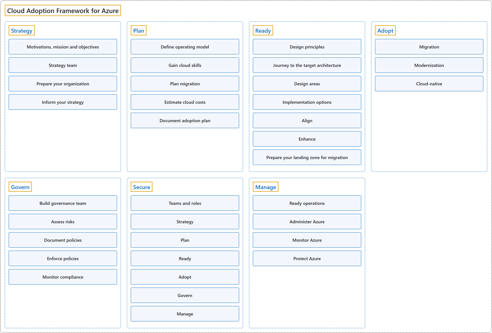

26. Cloud Adoption Framework for Azure
Classification

Process

Glossary
| Term | Definition | 中文翻译 | Source |
|---|---|---|---|
| Cloud Adoption Framework for Azure Azure 云采用框架 |
"The Microsoft Cloud Adoption Framework (CAF) helps decision makers make better decisions, faster." | Microsoft 云采用框架（CAF）帮助决策者做出更好的决策，而且更快。 | Microsoft, 2026a, para. 1 |
| Azure adoption phases Azure 采用阶段 |
"Azure adoption is the foundation of the Cloud Adoption Framework. It helps decision makers answer key questions about why they are adopting Azure, how they will prepare their organization, and how they will operate Azure over time." | Azure 采用是云采用框架的基础。它帮助决策者回答一些关键问题：为什么要采用 Azure、如何让组织做好准备，以及长期如何运营 Azure。 | Microsoft, 2026a, "How the Cloud Adoption Framework works" section, para. 2 |
| Strategy 战略 |
"A cloud adoption strategy directs how your business adopts cloud technology." | 云采用战略指导你的企业如何采用云技术。 | Microsoft, 2026b, para. 1 |
| Plan 规划 |
"A cloud adoption plan converts your cloud strategy into an actionable plan that's specific to your goals." | 云采用计划把你的云战略转化为可执行的计划，并针对你的目标。 | Microsoft, 2025b, para. 1 |
| Ready 就绪 |
"The Ready phase of the Cloud Adoption Framework helps you design your Azure landing zone to meet your organization's requirements." | Cloud Adoption Framework 的就绪阶段帮助你设计 Azure 登陆区，以满足组织的要求。 | Microsoft, 2025e, para. 1 |
| Adopt 采用 |
(context) "How will we migrate, modernize, and build workloads?" | （语境）我们要怎样迁移、现代化和构建工作负载？ | Microsoft, 2026a, "How the Cloud Adoption Framework works" section, table row 4 |
| Govern 治理 |
"Cloud governance is how an organization controls its use of cloud services by establishing guardrails." | 云治理是组织通过建立防护措施来控制其云服务使用的方式。 | Microsoft, 2025a, para. 1 |
| Secure 安全 |
"The Cloud Adoption Framework for Azure Secure methodology provides a structured approach for securing your Azure cloud estate." | Azure 云采用框架的安全方法提供了一种保护 Azure 云资产的结构化方法。 | Microsoft, 2025d, para. 1 |
| Manage 管理 |
(context) "The Cloud Adoption Framework (CAF) Manage methodology introduces the RAMP approach (Ready, Administer, Monitor, Protect) to help you build these capabilities." | （语境）云采用框架（CAF）的管理方法引入了 RAMP 方法（就绪、管理、监视、保护），帮助你构建这些能力。 | Microsoft, 2025c, para. 2 |
Coverage
| Certification | Skill area |
|---|---|
| AZ-305 Designing Microsoft Azure Infrastructure Solutions | Design identity, governance, and monitoring solutions (25–30%) Design infrastructure solutions (30–35%) |
References
- Microsoft. (2025a, May 22). Build a cloud governance team. Cloud Adoption Framework. Microsoft Learn. https://learn.microsoft.com/en-us/azure/cloud-adoption-framework/govern/
- Microsoft. (2025b, July 15). Prepare your organization for the cloud. Cloud Adoption Framework. Microsoft Learn. https://learn.microsoft.com/en-us/azure/cloud-adoption-framework/plan/
- Microsoft. (2025c, April 1). Ready your Azure cloud operations. Cloud Adoption Framework. Microsoft Learn. https://learn.microsoft.com/en-us/azure/cloud-adoption-framework/manage/
- Microsoft. (2025d, September 12). Secure overview. Cloud Adoption Framework. Microsoft Learn. https://learn.microsoft.com/en-us/azure/cloud-adoption-framework/secure/overview
- Microsoft. (2025e, July 24). What is an Azure landing zone? Cloud Adoption Framework. Microsoft Learn. https://learn.microsoft.com/en-us/azure/cloud-adoption-framework/ready/landing-zone/
- Microsoft. (2026a). Cloud Adoption Framework for Azure. Microsoft Learn. https://learn.microsoft.com/en-us/azure/cloud-adoption-framework/overview
- Microsoft. (2026b, May 14). Develop a cloud adoption strategy. Cloud Adoption Framework. Microsoft Learn. https://learn.microsoft.com/en-us/azure/cloud-adoption-framework/strategy/